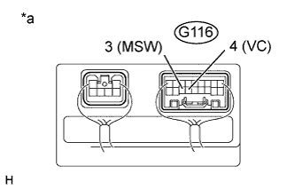
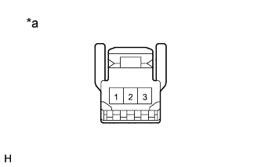

DTC B2603 Неисправность в цепи ручного переключателя наклона и телескопического изменения высоты |
| Код DTC | Условие обнаружения | Неисправный участок |
| B2603 | Когда приводится в действие переключатель наклона и телескопического изменения высоты, в мультиплексный ЭБУ регулировки наклона и телескопического изменения высоты подается недопустимое напряжение. |
|
| 1.СНИМИТЕ ПОКАЗАНИЯ ПОРТАТИВНОГО ДИАГНОСТИЧЕСКОГО ПРИБОРА (ДЛЯ ПЕРЕКЛЮЧАТЕЛЯ ПОДЪЕМА/ОПУСКАНИЯ И ПЕРЕКЛЮЧАТЕЛЯ ВЫДВИЖЕНИЯ/ВТЯГИВАНИЯ ТЕЛЕСКОПИЧЕСКОГО МЕХАНИЗМА) |
Проверьте в режиме Data List, что переключатель наклона и телескопического изменения высоты работает нормально.
| Информация на дисплее прибора | Измеряемая величина / диапазон измерения | Нормальное состояние | Замечание по диагностике |
| Tilt Up Switch | Сигнал подъема от ручного переключателя /ON (ВКЛ) или OFF (ВЫКЛ) | ON (ВКЛ): подъем инициирован ручным переключателем OFF (ВЫКЛ): подъем не инициирован ручным переключателем | - |
| Tilt Down Switch | Сигнал опускания от ручного переключателя /ON (ВКЛ) или OFF (ВЫКЛ) | ON (ВКЛ): опускание инициировано ручным переключателем OFF (ВЫКЛ): опускание не инициировано ручным переключателем | - |
| Telesco Short Switch | Сигнал втягивания телескопического механизма от ручного переключателя /ON (ВКЛ) или OFF (ВЫКЛ) | ON (ВКЛ): втягивание телескопического механизма инициировано ручным переключателем OFF (ВЫКЛ): втягивание телескопического механизма не инициировано ручным переключателем | - |
| Telesco Long Switch | Сигнал выдвижения телескопического механизма от ручного переключателя /ON (ВКЛ) или OFF (ВЫКЛ) | ON (ВКЛ): выдвижение телескопического механизма инициировано ручным переключателем OFF (ВЫКЛ): выдвижение телескопического механизма не инициировано ручным переключателем | - |
|
| ||||
| OK | |
| 2.ПРОВЕРЬТЕ DTC |
Удалите коды DTC (Нажмите здесь).
Проверьте коды DTC (Нажмите здесь).
| Результат | Следующий шаг |
| DTC выводится | А |
| DTC не выводится | B |
|
| ||||
| А | ||
| ||
| 3.ПРОВЕРЬТЕ ЖГУТ ПРОВОДОВ И РАЗЪЕМ (МУЛЬТИПЛЕКСНЫЙ ЭБУ РЕГУЛИРОВКИ НАКЛОНА И ТЕЛЕСКОПИЧЕСКОГО ИЗМЕНЕНИЯ ВЫСОТЫ – ПЕРЕКЛЮЧАТЕЛЬ СВЕТА ФАР ИЛИ ПЕРЕКЛЮЧАТЕЛЬ СТЕКЛООЧИСТИТЕЛЯ ВЕТРОВОГО СТЕКЛА) |
Отсоедините разъем G116 мультиплексного ЭБУ регулировки наклона и телескопического изменения высоты.
Отсоедините разъем G44 переключателя света фар или разъем G120 переключателя стеклоочистителя ветрового стекла.
Измерьте сопротивление в соответствии со значениями, приведенными в таблице ниже.
| Контакты для подключения диагностического прибора | Условие | Заданные условия |
| G116-4 (VC) - G44-8 (VC) | Всегда | Менее 1 Ом |
| G116-3 (MSW) - G44-10 (MSW) | ||
| G44-8 (VC) - масса | Всегда | 10 кОм или более |
| G44-10 (MSW) - масса |
| Контакты для подключения диагностического прибора | Условие | Заданные условия |
| G116-4 (VC) - G120-12 (VC) | Всегда | Менее 1 Ом |
| G116-3 (MSW) - G120-13 (MSW) | ||
| G120-12 (VC) - масса | Всегда | 10 кОм или более |
| G120-13 (MSW) - масса |
|
| ||||
| OK | |
| 4.ПРОВЕРЬТЕ МУЛЬТИПЛЕКСНЫЙ ЭБУ РЕГУЛИРОВКИ НАКЛОНА И ТЕЛЕСКОПИЧЕСКОГО ИЗМЕНЕНИЯ ВЫСОТЫ (НАПРЯЖЕНИЕ НА КОНТАКТЕ VC) |
|  |
Подсоедините разъем G116 мультиплексного ЭБУ регулировки наклона и телескопического изменения высоты.
Измерьте напряжение в соответствии со значениями, приведенными в таблице.
| Контакты для подключения диагностического прибора | Положение переключателя | Заданные условия |
| G116-4 (VC) - G116-3 (MSW) | Зажигание включено (IG) | 4,9 - 5,1 В |
| *a | Устройство с подсоединенным жгутом проводов (мультиплексный ЭБУ регулировки наклона и телескопического изменения высоты) |
|
| ||||
| OK | |
| 5.ПРОВЕРЬТЕ ПЕРЕКЛЮЧАТЕЛЬ НАКЛОНА И ТЕЛЕСКОПИЧЕСКОГО ИЗМЕНЕНИЯ ВЫСОТЫ |
|  |
Снимите переключатель наклона и телескопического изменения высоты (Нажмите здесь).
Измерьте сопротивление в соответствии со значениями, приведенными в таблице ниже.
| Контакты для подключения диагностического прибора | Положение переключателя | Заданные условия |
| 1 - 3 | Наклон вверх | 342 - 378 Ом |
| Наклон вниз | 1890,5 - 2089,5 Ом | |
| Втягивание телескопического механизма | 750,5 - 829,5 Ом | |
| Выдвижение телескопического механизма | 152 - 168 Ом |
| Результат | Следующий шаг | |
| NG | А | |
| OK | Для моделей с переключателем света фар с левой стороны | B |
| Для моделей с переключателем света фар с правой стороны | C | |
| *a | Устройство с неподсоединенным жгутом проводов (переключатель наклона и телескопического изменения высоты) |
|
| ||||
|
| ||||
| А | ||
| ||